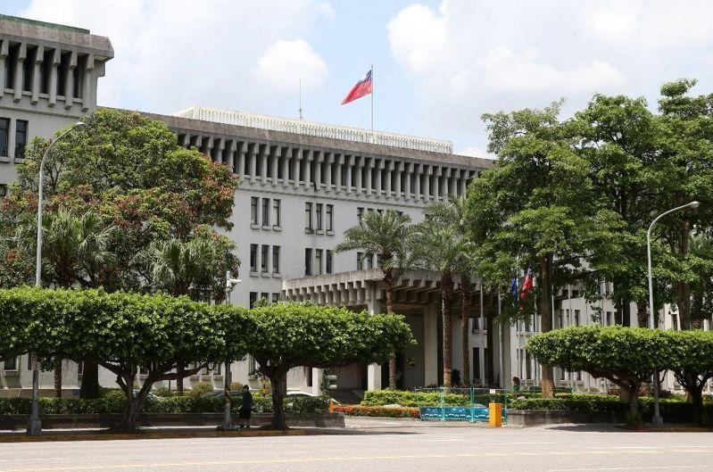

台湾友邦危地马拉共和国外交部次长欧洛克（Julio Eduardo OROZCO PÉREZ）应台政府邀请，将于明日访台，台外交部对此表示诚挚欢迎。
台外交部指出，友邦危地马拉共和国外交部次长欧洛克将于8月5日至9日访台，此行是欧洛克自今年1月就任以来首次访问台湾，将拜会外交部长林佳龙，接受次长陈立国款宴，并拜会经济部、财团法人国际合作发展基金会、中美洲银行驻台国家办事处、海外投资开发股份有限公司、财团法人中华民国纺织业拓展会及台北市进出口商业同业公会。
台外交部表示，欧洛克也将应邀出席财团法人台湾永续能源研究基金会主办的「亚太永续博览会」开幕式并于相关论坛担任讲座，另将参访新竹科学园区、工业技术研究院及故宫博物院等经建文化机构。此行除将实地了解台湾产业发展现况，更有助增进台湾各界对于瓜国投资环境的认识。
台外交部指出，欧洛克学验俱丰，熟稔经贸议题，曾任危地马拉驻美国大使馆经济参事、美国太平洋研究所（PACIT）经贸投资观光计划商务专员、加勒比海国家联盟（AEC）永续观光主任等重要职务。